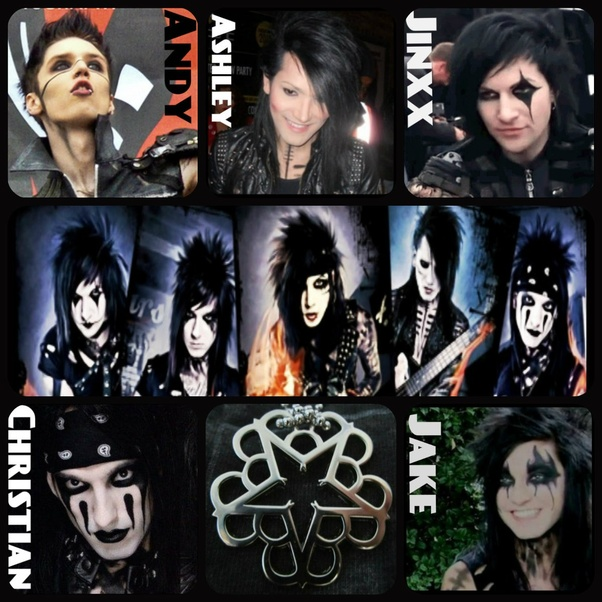

Facts about Black Veil Brides tell you about the American rock band. In 2006, this band was established in Ohio USA. The base for Black Veil Brides is located in California. This band is famous because of their physical appearance, style and performance on stage.
Facts About Black Veil Brides: The Physical Appearance Of The Band
This American rock band is very famous with their unique physical appearance and style. You can find them wearing the tight black studded clothes, black makeup, body point, and long hair. Black Veil Brides claimed that they are inspired by the 1980s glam metal acts for the style. The stage persona is inspired from Kiss’ and Mötley Crüe’s.
The band is comprised of 5 members; -
Andy Biersack – lead vocals (2006 to present)
Jinxx – rhythm guitar, violin, backing vocals (2009 to present)
Jake Pitts – lead guitar (2010 to present)
Christian "CC" Coma – drums (2010 to present)
Lonny Eagleton – bass, backing vocals (2019 to present)

Previous band members that contrubuted to the band previously are; -
Johnny Herold – lead guitar (2006)
Phil Cenedella – bass, backing vocals (2006)
Chris Riesenberg – drums (2006)
Kevin Harris – keyboards (2006–2007)
Nate Shipp – guitars, backing vocals (2006–2007)
Robert Thomas – bass (2007–2008)
Mike Stamper – drums (2006–2009)
Chris Hollywood – guitars, backing vocals (2007–2009)